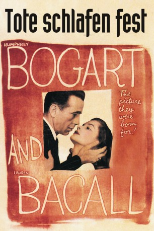

#8592 Tote schlafen fest
Alternativ: The Big Sleep
 
 IMDB-Wertung: 8.0 / 10
IMDB-Wertung: 8.0 / 10  Metascore: 0
Metascore: 0 
Privatdetektiv Philip Marlowe wird von Millionär Sternwood beauftragt, eine Bande von Erpressern unschädlich zu machen. Bevor er mit seiner Arbeit beginnt, trifft er auf die beiden exzentrischen Töchter Sternwoods, Vivian und Carmen. Kurz darauf, nachdem er einem schwunghaften Handel mit pornographischer Literatur auf die Spur gekommen ist, findet er die unter Rauschgift stehende Carmen neben der Leiche eines der Erpresser. Im Anschluß häufen sich die Leichen und Marlowe selbst entgeht nur knapp dem Tod, bevor er schließlich Vivian in seine Arme schließen kann.
Jahr: 1946
Dauer: 113 Minuten
FSK: 16
Land: USA Studio: Dominant Pictures CorporationTonspuren:
Untertitel:
Auflösung: 1080p (1488x1080) Größe: 8949 MB
Genre: Thriller, Krimi, Mystery,
Regisseur: Howard Hawks
Drehbuch: William Faulkner
Soundtrack: Max Steiner
Darsteller:
 Humphrey Bogart als Philip Marlowe
Humphrey Bogart als Philip Marlowe Lauren Bacall als Vivian Rutledge
Lauren Bacall als Vivian Rutledge- John Ridgely als Eddie Mars
- Martha Vickers als Carmen Sternwood
 Dorothy Malone als Acme Book Shop Proprietress
Dorothy Malone als Acme Book Shop Proprietress- Peggy Knudsen als Mona Mars
 Regis Toomey als Chief Inspector Bernie Ohls
Regis Toomey als Chief Inspector Bernie Ohls Bob Steele als Lash Canino
Bob Steele als Lash Canino Elisha Cook Jr. als Harry Jones
Elisha Cook Jr. als Harry Jones Louis Jean Heydt als Joe Brody
Louis Jean Heydt als Joe Brody Trevor Bardette als Art Huck (uncredited)
Trevor Bardette als Art Huck (uncredited)- Joy Barlow als Taxi Driver (uncredited)
- Max Barwyn als Max - Head Waiter (uncredited)
- Tanis Chandler als Waitress (uncredited)
 Joseph Crehan als Medical Examiner (uncredited)
Joseph Crehan als Medical Examiner (uncredited)- Jay Eaton als Casino Patron (uncredited)
 Tom Fadden als Sidney (uncredited)
Tom Fadden als Sidney (uncredited) Bess Flowers als Woman with Bumped Man (uncredited)
Bess Flowers als Woman with Bumped Man (uncredited) Stuart Hall als Nightclub Patron (uncredited)
Stuart Hall als Nightclub Patron (uncredited) Kenner G. Kemp als Nightclub Patron (uncredited)
Kenner G. Kemp als Nightclub Patron (uncredited)- Lorraine Miller als Hatcheck Girl (uncredited)
 Forbes Murray als Furtive Man (uncredited)
Forbes Murray als Furtive Man (uncredited) William H. O'Brien als Waiter (uncredited)
William H. O'Brien als Waiter (uncredited) Jack Perry als Silent Thug Beating Marlowe (uncredited)
Jack Perry als Silent Thug Beating Marlowe (uncredited) Suzanne Ridgway als Nightclub Patron (uncredited)
Suzanne Ridgway als Nightclub Patron (uncredited) Jeffrey Sayre als Croupier (uncredited)
Jeffrey Sayre als Croupier (uncredited)- Theodore von Eltz als Arthur Gwynn Geiger (uncredited)
- Ben Welden als Pete (uncredited)
- Charles Waldron als General Sternwood
- Charles D. Brown als Norris - the Butler
- Deannie Best als Waitress (uncredited)
- Jack Chefe als Croupier (uncredited)
- James Conaty als Nightclub Patron (uncredited)
- Sonia Darrin als Agnes Lozelle (uncredited)
- Jack Deery als Nightclub Patron (uncredited)
- Carole Douglas als Librarian (uncredited)
- Kenneth Gibson als Casino Patron (uncredited)
- Joe Gilbert als Nightclub Patron (uncredited)
- Shep Houghton als Casino Patron (uncredited)
- Pete Kooy als Motorcycle Cop (uncredited)
- Shelby Payne als Cigarette Girl (uncredited)
- Tommy Rafferty als Carol Lundgren (uncredited)
- Waclaw Rekwart als Nightclub Patron (uncredited)
- Edward Rickard als Nightclub Patron (uncredited)
- Emmett Vogan als Ed - Deputy Sheriff (uncredited)
- Wally Walker als Mars' Thug (uncredited)
- Dan Wallace als Owen Taylor (uncredited)
- Paul Weber als Mars' Thug (uncredited)
Datei: X:\1900-1949\Tote schlafen fest (1946, FSK16, 1488x1080).mkv seit 22.03.2018
Festplatte: HD 1900-1970
 Es gibt insgesamt 80 Filme in der Gruppe '1900-1949'
Es gibt insgesamt 80 Filme in der Gruppe '1900-1949'